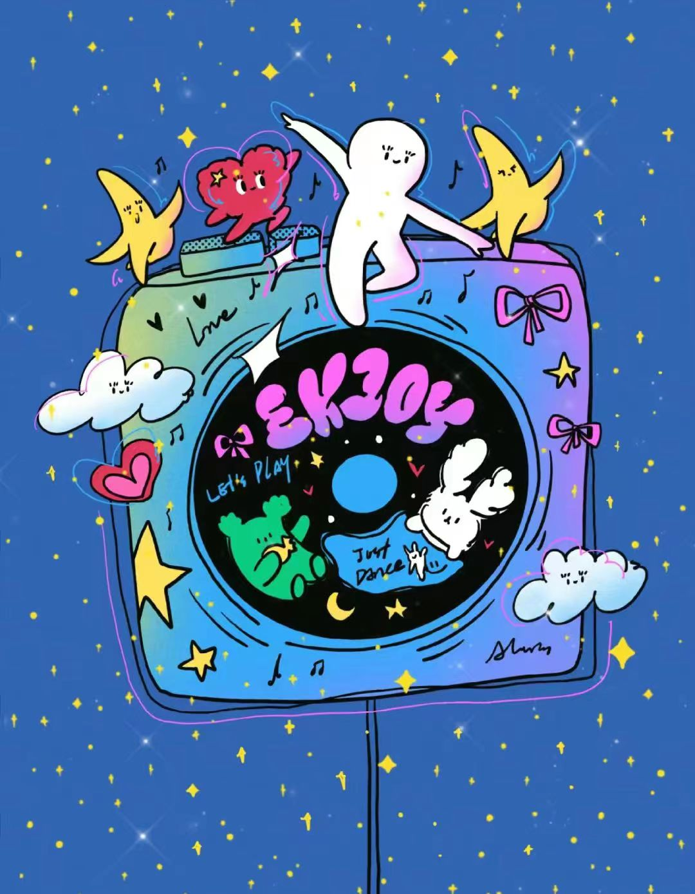
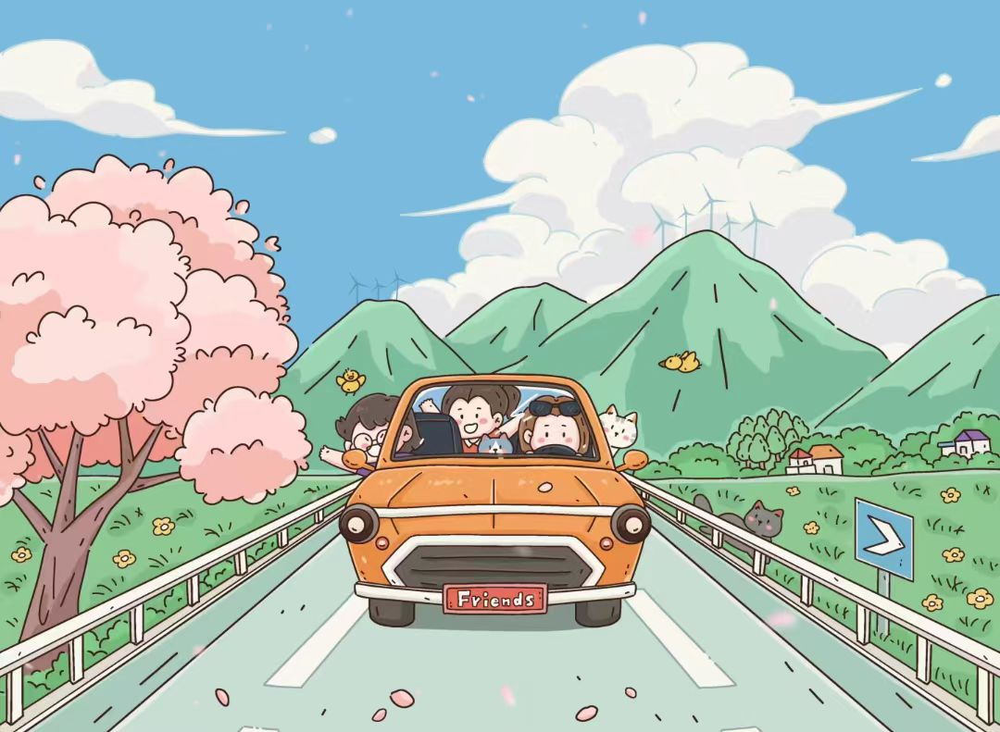
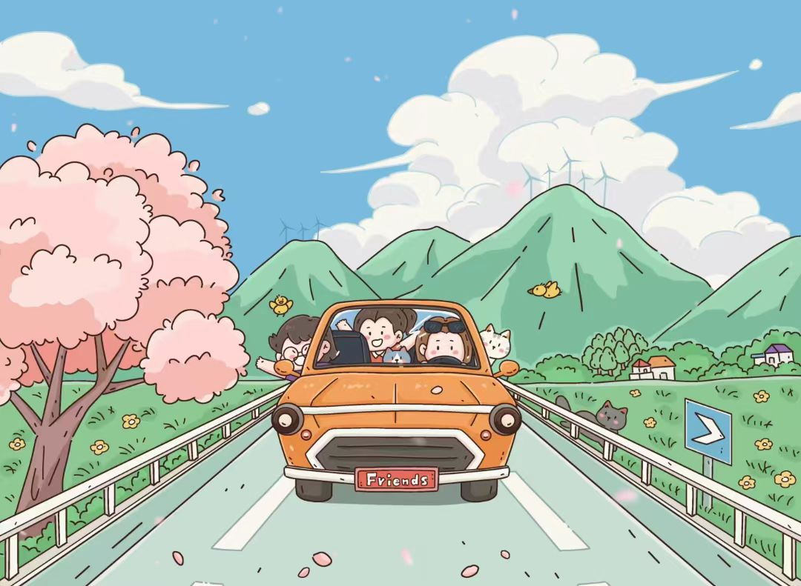

压力是一个多维的概念,可以从生理、心理、和行为三个方面进行描述。生理压力是指身体在面对压力时产生的生理反应;心理压力指的是个体在心理上对压力的的感受
,表现为焦虑、易于等情绪;兴许压力则是个体在面对压力所表现出的行为变化,如逃避、攻击等。
压力的类型有急性压力(面试、考试)、慢性压力(工作压力、家庭压力)、积极压力(有助于个体成长和发展)、消极压力(导致个体心理和生理上的损害)。
缓解压力的方法:面对压力,要学会调整心态,以积极的而态度去应对。合理规划时间。培养兴趣爱好,以缓解压力。与他人分享自己的感受。进行体育锻炼。旅游。听音乐。
总之,压力是现代生活中不可避免的一部分。面对压力,通过做到正确认识和应对来获得压力缓解。

音乐散去压力
音乐是一种具有强大感染力的艺术形式,可以通过各种方式影响人的心理和生活状态。

音乐主要表现在:1.可以转移注意力,人们在听音乐时候注意力会被音乐所吸引,从而使压力带来的负面情绪得到缓解。 2.可以降低心率。 3.可以减少应激激素。应激激素如皮质醇的分泌会增加压力感,而音乐可以降低这些激素的分泌。
不同的音乐对缓解压力的效果也有所不同。一般来说,轻柔、优美的古典音乐和轻音乐在缓解压力方面效果好。而摇滚、重金属等节奏较快、音量较大的音乐则可能起到相反的作用。
最后,我们要在实际生活中选择适合自己的音乐,达到最佳的环节压力效果。定时听音乐有助于形成稳定的压力缓解机制。参与音乐活动可以结识志同道合的朋友,共同缓解压力。在专业人士指导下通过音乐疗法来缓解压力。
总之,音乐值得我们在生活中加以运用和推广。让我们共同感受音乐的魅力,用音乐舒缓压力,享受美好人生。
不同的音乐对缓解压力的效果也有所不同。一般来说,轻柔、优美的古典音乐和轻音乐在缓解压力方面效果好。而摇滚、重金属等节奏较快、音量较大的音乐则可能起到相反的作用。
最后,我们要在实际生活中选择适合自己的音乐,达到最佳的环节压力效果。定时听音乐有助于形成稳定的压力缓解机制。参与音乐活动可以结识志同道合的朋友,共同缓解压力。在专业人士指导下通过音乐疗法来缓解压力。
总之,音乐值得我们在生活中加以运用和推广。让我们共同感受音乐的魅力,用音乐舒缓压力,享受美好人生。
旅游与压力
旅游是指人们为了休闲、娱乐、探亲访友、商务、宗教、探险、教育等目的,离开常住地,到其他地方进行的活动。旅游可以让人暂时离开日常生活和工作压力,仍人们心态得到放松,从而减轻心理压力。去旅游呼吸到了大自然的新鲜空气和阳光,有助于身体恢复和健康。 旅游可以结交到朋友,与家人一起去旅行彼此增进感情。 激发人们的探索欲望和求知欲,从而实现自我价值的提升和满足。
自然风光旅游可以让人们欣赏到大自然的美丽景色,感受大自然的魅力。文化古迹旅游可以让人们了解和学习不同的历史和文化,激发人们的求知欲和探索欲。休闲娱乐可以让人民参与到各种娱乐活动中,如滑雪、游泳、钓鱼等。探险可以让人么挑战自己的潜能。
最后我们要合理规划旅游(根据经济条件、时间、兴趣爱好)、选择适合自己的旅游方式、保持良好的心态、适当安排休息。 
自然风光旅游可以让人们欣赏到大自然的美丽景色,感受大自然的魅力。文化古迹旅游可以让人们了解和学习不同的历史和文化,激发人们的求知欲和探索欲。休闲娱乐可以让人民参与到各种娱乐活动中,如滑雪、游泳、钓鱼等。探险可以让人么挑战自己的潜能。
最后我们要合理规划旅游(根据经济条件、时间、兴趣爱好)、选择适合自己的旅游方式、保持良好的心态、适当安排休息。 